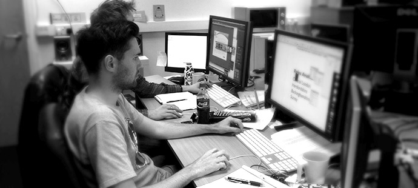

Theo một cuộc điều tra thăm dò ý kiến gần đây của The Creative Group, hơn một phần ba (34%) những nhà quản lý trong ngành quảng cáo và marketing cho rằng kinh nghiệm làm việc là yếu tố quan trọng nhất khi tuyển dụng những tài năng thiết kế vừa mới ra trường. Yếu tố này còn cần thiết hơn cả quá trình phỏng vấn, lý lịch hồ sơ ấn tượng, giới thiệu từ những chuyên gia trong ngành và các tác phẩm thiết kế của bạn.
Nếu bạn đang nghĩ đến công việc tương lai sau khi tốt nghiệp, ngay bây giờ chính là lúc bạn tìm kiếm thêm nhiều kinh nghiệm trong môi trường làm việc thực tế. Hay bạn đã ra trường rồi và đang đọc bài viết này? Chúng tôi cũng có một vài lưu ý hữu ích cho bạn. Hãy cùng mình xem qua bài viết này nha.
Tin vui là: Có rất nhiều cách để thêm kinh nghiệm làm việc đáng giá, gây ấn tượng với nhà tuyển dụng và có được việc làm thiết kế đầu tiên. Sau đây là năm mẹo hay.

1.Tìm một cơ hội thử việc/học việc
Một trong những cách tốt nhất để có thêm kinh nghiệm thực tế trước khi tốt nghiệp là dành ra một học kì hay một mùa hè để thử việc. Rất nhiều chương trình thiết kế có bao gồm cả cơ hội thử việc như một phần của chương trình học. Trong suốt quá trình huấn luyện này, bạn sẽ học hỏi thêm về thực tiễn và đem lại cho bản thân những kĩ năng quý giá mà bạn có thể nhấn mạnh khi đi tìm việc. Đa phần các cơ hội thử việc không đảm bảo là bạn sẽ có công việc chính thức ở cùng chỗ, nhưng vẫn có một vài trường hợp ngược lại. Nếu bạn có thể gây ấn tượng với người quản lý chương trình thử việc bằng những sáng kiến hay ý tưởng của bạn, người này sẽ cho bạn một cơ hội làm chính thức sau khi ra trường. Khi bạn đang xem xét cơ hội thử việc thì hãy:
- Nhắm đến các cơ hội học việc trực tiếp tại văn phòng để có thể làm chung với các chuyên gia có kinh nghiệm lâu năm. Việc đó sẽ giúp bạn vượt qua những trở ngại khó khăn trong quá trình học hỏi.
- Tìm những dự án thử việc mà bạn có thể thêm vào hồ sơ tác phẩm của mình
2.Chọn một người hướng dẫn
Khi tìm kiếm công việc thiết kế đầu tiên, hãy kiếm tìm những chuyên gia sáng tạo giàu kinh nghiệm, người có thể trả lời những câu hỏi của bạn cũng như định hướng nghề nghiệp cho bạn.
- Nếu bạn muốn theo đuổi con đường sự nghiệp của ai, thì hãy tìm kiếm người đó. Chẳng hạn như, nếu mục tiêu của bạn là làm trong công ty quảng cáo, bạn sẽ học hỏi được nhiều điều hữu ích từ sự hướng dẫn của một nhà thiết kế gần đây có kinh nghiệm làm việc trong môi trường công ty quảng cáo.
- Khi đã tìm ra một người sẵn sàng hướng dẫn bạn, hãy xây dựng mối quan hệ với người này bằng cách yêu cầu có thêm những cuộc họp, cũng như theo dõi người đó lúc làm việc trong khoảng từ một đến hai tuần.
- Hãy chú ý vào những lời khuyên từ người này, hỏi những câu hỏi liên quan và tôn trọng thời gian cũng như chuyên môn của người hướng dẫn cho bạn.
Tìm cơ hội thử việc ở đâu: Hầu hết các trường đại học đều tổ chức ngày hội việc làm. Ở đó, bạn sẽ gặp được những công ty đang tìm kiếm người thử việc. Liên hệ với trung tâm việc làm ở trường bạn học hay với hội cựu học sinh để biết thêm chi tiết về cách tham gia thử việc. Ngoài ra, Robert Half (Công ty mẹ của TCG) và các website như AIGA, InternMatch, Internships.com và Creative Interns đều cung cấp thông tin về cơ hội thử việc.
3.Tìm cơ hội làm việc ngoài giờ cũng như những việc làm tự do
Tuy bạn không có đủ kinh nghiệm để có một việc làm ngay khi mới tốt nghiệp, bạn vẫn có thể xem xét cơ hội làm việc bán thời gian hoặc những dự án tự do – hay bất cứ thứ gì để bạn trau dồi đam mê và sáng kiến. Một công ty quảng cáo nào đó có thể đang tìm kiếm người trợ giúp nhóm thiết kế của họ 10 giờ mỗi tuần, hay một nhà hàng địa phương nào đó có thể cần giúp đỡ trong việc thiết kế trang web mới. Ở thời điểm này trên con đường sự nghiệp, bất cứ kinh nghiệm nào có liên quan cũng góp phần xây dựng hồ sơ thiết kế của bạn.
4.Làm tình nguyện viên
Startups hay những tổ chức phi lợi nhuận đặc biệt rất cần dịch vụ thiết kế miễn phí. Tuy rằng bạn không có lương khi làm tình nguyện viên, những việc thiết kế không công mang lại vô vàn lợi ích. Không những rèn luyện kĩ năng của mình và có thêm kinh nghiệm thực tế, bạn còn xây dựng được hồ sơ tác phẩm thiết kế của mình cũng như mở rộng mối quan hệ trong ngành.
5.Nhấn mạnh kinh nghiệm của bạn trong buổi phỏng vấn
Mặc dù kinh nghiệm làm việc là yếu tố hàng đầu trên wish list của những nhà tuyển dụng tham gia cuộc khảo sát ý kiến của The Creative Group, phản ứng trong buổi phỏng vấn là yếu tố thứ nhì. Hãy chuẩn bị cho buổi phỏng vấn bằng cách:
- Nghiên cứu thêm về công ty rồi liên kết kinh nghiệm và đam mê của bạn với những điều mà nhà tuyển dụng đã vạch ra trong phần mô tả công việc.
- Xem tin tức hay các báo cáo liên quan đến ngành nghề mà bàn luận về ưu tiên hàng đầu của các tổ chức và những mảng họ cần cải thiện.
- Nhận biết những câu chuyện thú vị khi bạn còn thử việc, làm thiết kế bán thời gian hay thiết kế tình nguyện để thể hiện sự sáng tạo, khả năng giải quyết vấn đề và tinh thần hợp tác của bạn.
Cụm từ “Yêu cầu có kinh nghiệm” có thể làm lạc lối những ứng viên rụt rè trong công cuộc tìm việc, nhưng bạn sẽ không như thế. Bằng cách chủ động kiếm tìm nhiều cơ hội đa dạng để phát triển kĩ năng và kinh nghiệm trước khi ra trường, bạn sẽ có được cả kết quả học tập và kĩ năng thực tế để gây ấn tượng với nhà tuyển dụng và có được công việc chính thức đầu tiên.
Nguồn RGB